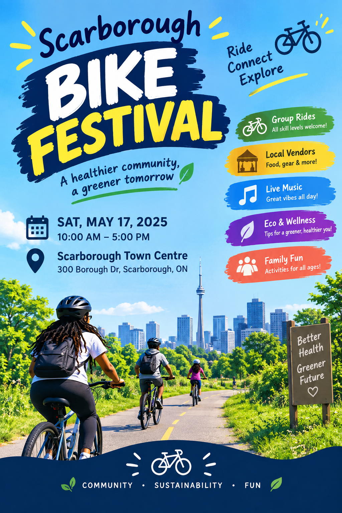

Scarborough Bike Festival
Ride, connect, explore. A day of group rides, local vendors, live music, and family-friendly fun — all in the name of a healthier community and a greener tomorrow.
WhenSaturday, May 17 · 10:00 AM – 5:00 PM
WhereScarborough Town Centre, 300 Borough Dr, Scarborough, ON
CostFree to attend · some vendor items for purchase
Group Rides
Local Vendors
Live Music
Eco & Wellness
Family Fun
Whether you're a seasoned rider or bringing the kids on training wheels, there's a route and an activity for you. Expect food trucks, gear demos, sustainability tips, and a community-wide after-ride hangout to close out the day.